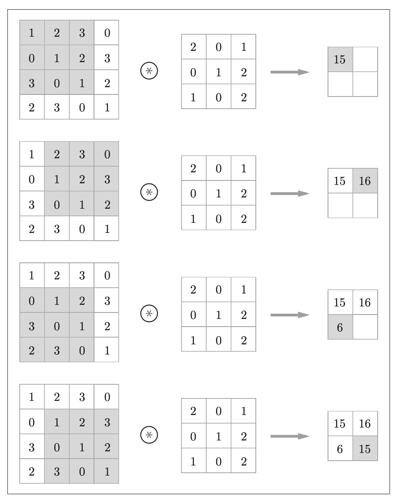
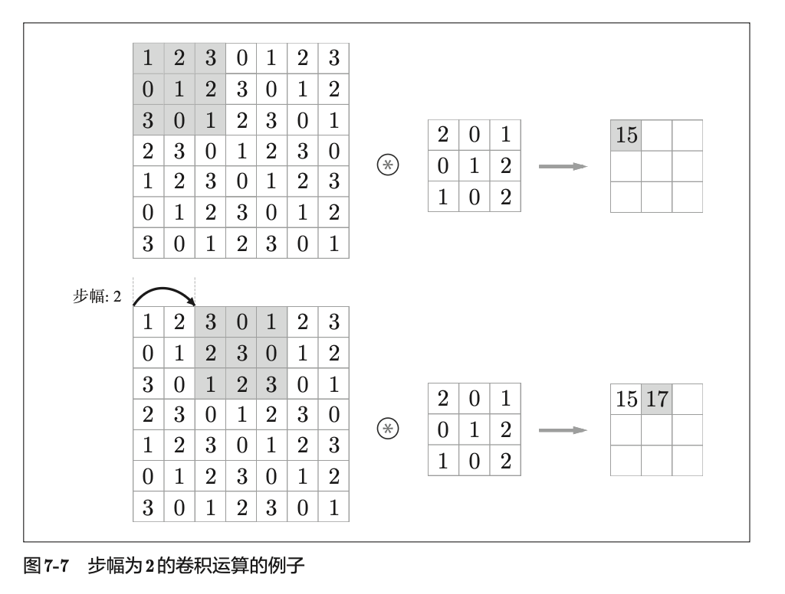
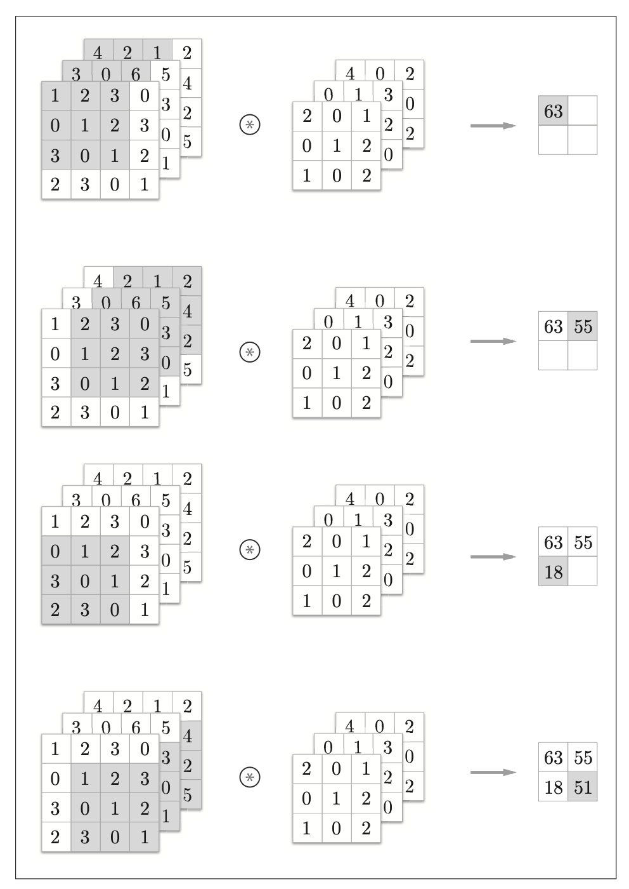
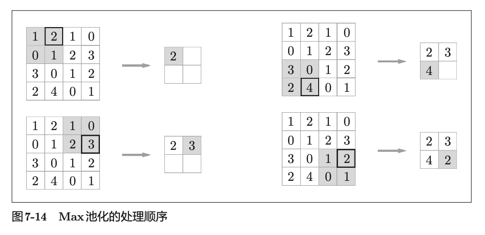

卷积神经网络
卷积层
全连接层存在的问题
全连接层会忽视形状，将全部的输入数据作为相同的神经元
（同一维度的神经元）处理，所以无法利用与形状相关的信息。
卷积层可以保持形状不变。当输入数据是图像时，卷积层会以 3 维
数据的形式接收输入数据，并同样以 3 维数据的形式输出至下一层。
CNN 中，有 时 将 卷 积 层 的 输 入 输 出 数 据 称 为 特 征 图 （ feature
map ）。其中，卷积层的输入数据称为输入特征图 （ input feature map ），输出
数据称为输出特征图 （ output feature map ）。
卷积运算
卷积层进行的处理就是卷积运算。卷积运算相当于图像处理中的“滤波
器运算”。对于输入数据，卷积运算以一定间隔滑动滤波器的窗口并应用。这里所
说的窗口是指图中灰色的 3 × 3 的部分。如图所示，将各个位置上滤
波器的元素和输入的对应元素相乘，然后再求和（有时将这个计算称为乘积
累加运算 ）。然后，将这个结果保存到输出的对应位置。将这个过程在所有
位置都进行一遍，就可以得到卷积运算的输出。在全连接的神经网络中，除了权重参数，还存在偏置。

{kind=link}
{kind=link}
填充
在进行卷积层的处理之前，有时要向输入数据的周围填入固定的数据（比
如 0 等），这称为填充 （ padding ），是卷积运算中经常会用到的处理。
在图 7-6 的例子中，对大小为 (4, 4) 的输入数据应用了幅度为 1 的填充。“幅
度为 1 的填充”是指用幅度为 1 像素的 0 填充周围。
{kind=link}
步幅
应用滤波器的位置间隔称为步幅 （ stride ）。之前的例子中步幅都是 1，如
果将步幅设为 2，则如图 7-7 所示，应用滤波器的窗口的间隔变为 2 个元素。

{kind=link}
对于填充和步幅，如何计算输出大小。
假设输入大小为 (H, W)，滤波器大小为 (FH, FW)，输出大小为
(OH, OW)，填充为 P，步幅为 S。
当值无法除尽时，有时会向最接近的整数四舍五入，不进行
报错而继续运行。
3维数据的卷积运算
图像是 3 维数据，除了高、长方向之外，还需要处理通道方向。通道方向上有多个特征图时，会按通道进行输入数据和滤波器的卷积运算，并将结果相加，从而得到输出。

{kind=link}
池化层
池化是缩小高、长方向上的空间的运算。比如，如图 7-14 所示，进行将
2 × 2 的区域集约成 1 个元素的处理，缩小空间大小。

“Max
池化”是获取最大值的运算，“2 × 2”表示目标区域的大小。如图所示，从
2 × 2 的区域中取出最大的元素。此外，这个例子中将步幅设为了 2，所以
2 × 2 的窗口的移动间隔为 2 个元素。另外，一般来说，池化的窗口大小会
和步幅设定成相同的值。比如，3 × 3 的窗口的步幅会设为 3，4 × 4 的窗口
的步幅会设为 4 等。除了 Max 池化之外，还有 Average 池化等。
{kind=link}
卷积层和池化层的实现
在使用 PyTorch 的情况下，了解卷积层和池化层的基本原理足够了。
CNN的实现
import torch |
SimpleConvNet(
(conv1): Conv2d(3, 32, kernel_size=(3, 3), stride=(1, 1), padding=(1, 1))
(conv2): Conv2d(32, 64, kernel_size=(3, 3), stride=(1, 1), padding=(1, 1))
(fc1): Linear(in_features=4096, out_features=128, bias=True)
(fc2): Linear(in_features=128, out_features=10, bias=True)
)